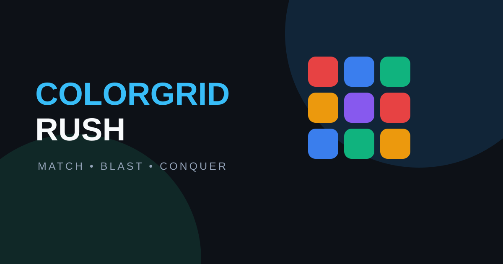

How to Play ColorGrid Rush
ColorGrid Rush is a free online match-3 puzzle game where every move can create a chain reaction. Match colorful gems, build special tiles, and clear 10 handcrafted levels on desktop or mobile.

Play ColorGrid RushHow the color matching game works
Swap two adjacent gems to make a line of three or more matching colors. You can tap two gems on desktop or swipe across the board on a touch device. The board refills after each match, so one good move can start a cascade.
- Match 3 gems to clear them and earn points.
- Match 4 gems to create a horizontal or vertical Line Blaster.
- Make a T or L shape to create an Area Bomb.
- Match 5 gems to create a Rainbow Gem.
Special gems and combo rules
Clears a full row or column when activated.
Clears a 3×3 area around the explosion.
Clears gems of a selected color.
Combine special gems for cross blasts, mega blasts, or a board-clearing explosion.
Scoring, moves, and objectives
Each level gives you a move limit and objectives such as reaching a score, collecting a color, or clearing ice tiles. Larger matches and chain reactions produce more points. Finish with moves remaining to earn a Rush Move bonus and improve your star rating.
Every starting board is generated without an immediate match and includes at least one valid move. When no move remains after a cascade, the board reshuffles automatically.
Tips for better matches
- Look for a match near the bottom when you want to create cascades.
- Save Rainbow Gems for colors that appear often on the board.
- Use Line Blasters to reach hard-to-clear rows and columns.
- Watch the objective tracker before spending your final moves.
- On mobile, use a short swipe in the direction of the swap.
Frequently asked questions
Is ColorGrid Rush free to play?
Yes. ColorGrid Rush is a free browser puzzle game with no download required for web play.
Can I play on mobile?
Yes. The game supports responsive touch controls on mobile, tablets, desktop browsers, and Android packaging.
How many levels are there?
There are 10 handcrafted levels with different score, collection, ice, and move-limit objectives.
What happens if I run out of moves?
The level ends and shows your unfinished objectives so you can retry and improve your result.